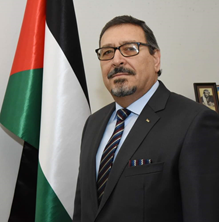

Надзвичайний та Повноважний Посол Палестини в
Україні
Хашем Хасан Дажані
ОСВІТА:
-
1984 рік
Магістр міжнародних відносин та міжнародного права (Київський університет імені Тараса Шевченка, Україна).
-
9 / 1987-1 / 7/1995
Заступник директора Інформаційного бюро ОВП у Гельсінкі, Фінляндія.
-
07.01.1995
Призначений заступником голови Генеральної делегації Палестини у Фінляндії (радником).

-
З 1992 р.
Помічник нерезидента Представника Організації визволення Палестини (ОВП) в Латвії, Литві та Естонії (брав
участь у всіх офіційних делегаціях до 2006 р.).
-
2005 - 2006 роки
Перший радник та виконуючий обов'язки керівника місії Генеральної делегації Палестини у Фінляндії.
-
23.12.2007 -16.09.2015
Надзвичайний та Повноважний Посол Держави Палестина в Республіці Зімбабве з грудня 2007 року, вручив вірчі
грамоти 8 березня 2008 року.
-
17/3 / 2010-16 / 9/2015
Надзвичайний та Повноважний Посол Держави Палестина в Республіці Малаві, який вручив вірчі грамоти 17 березня
2010 року.
-
27.09.2015 - 12.01.2019
Надзвичайний і Повноважний Посол Держави Палестина в Південно-Африканській Республіці (вірчі грамоти вручені
26 листопада 2015 р.).
-
17.02.2016 - 12.01.2019
Надзвичайний та Повноважний Посол Держави Палестина в Республіці Намібія.
Надзвичайний та Повноважний Посол держави Палестина в Королівстві Лесото за сумісництвом
Член Палестинської національної ради з квітня 2018 року.
-
29.05.2020
Надзвичайний та Повноважний Посол Палестини в Україні (Вірчі грамоти вручені 29 травня 2020 р)
Мови: арабська, англійська, російська, фінська
Одружений, має двох дітей
ІНШІ ДЕТАЛІ:
-
Закінчив Третій міжнародний курс дипломатичного навчання старших курсів у Центрі освіти та навчання
Департаменту закордонних справ Республіки Індонезія, що відбувся з 30 березня по 24 квітня 2009 року.
-
Пройшов курс міжнародного міграційного права, представлений Міжнародною організацією з міграції,
з 7 по 8 квітня 2009 року в Джакарті, Республіка Індонезія.
-
Отримав свідоцтво доктора філософії від Міжконфесійної церковної ради, Ради церков
Південної Африки та Консорціум коледжу Божественності 24 листопада 2018 року.
-
Отримав Почесну грамоту миру від Міжконфесійної Церковної Ради, Ради Церков Російської Федерації
Південна Африка та консорціум коледжу Божественності 24 листопада 2018 року.
-
Посол за мир від Всесвітньої федерації миру.
-
Нагороджена Подячною грамотою Інституту дипломатії Зімбабве 14 вересня 2015 року.
-
Нагороджений дипломатом року 2012 року з Близького Сходу
-
Нагороджений дипломатом року з Близького Сходу та всіх арабських націй в Африці - другий.
-
Нагороджений дипломат року 2015 - 2 * другий.
-
Нагороджений дипломатом року з Близького Сходу 2015 року
-
Брав участь у кількох міжнародних конгресах, зустрічах та семінарах з питань, пов'язаних з Палестиною
-
Колишній активіст та лідер палестинського студентського руху та молодіжного руху
-
Засновник кількох товариств, особливо пов'язаних з палестинцями